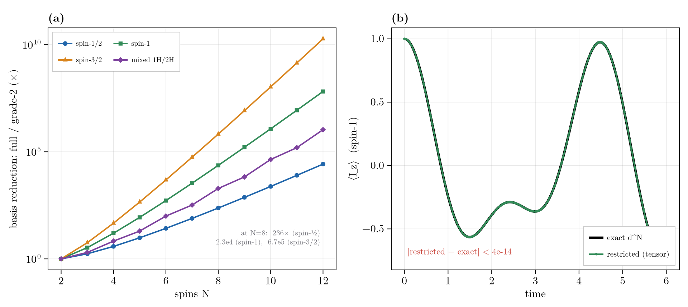
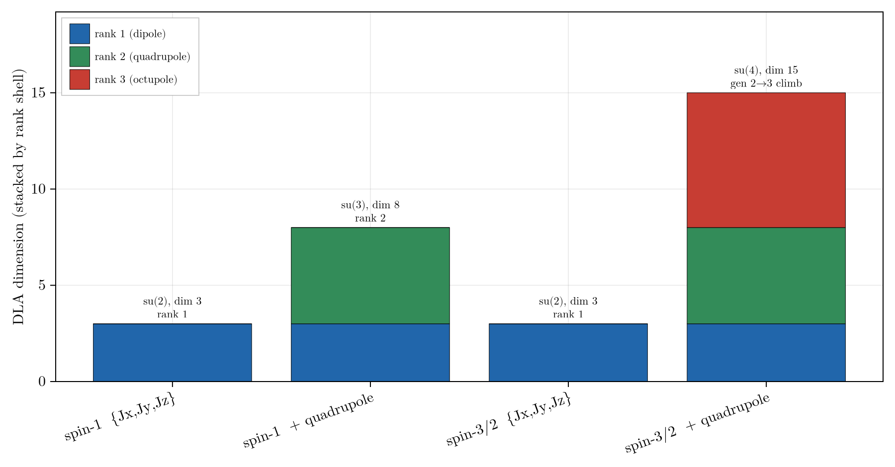

Higher-Spin
Higher-spin (spin > 1/2) support is a full, validated surface reached through the same entry points as spin-1/2 (restricted_basis(...; radix), hamiltonian, state, spin_op, ...): basis and algebra, Liouvillian and propagation, the named terms and state constructors, relaxation, grade truncation, symmetry, and reachability are all in place and checked to machine precision against exact d^N references.
The spin-1/2 engine represents ρ = Σ c_α P_α in a grade-truncated basis of Pauli strings. Higher spin generalizes the per-site alphabet to the d^2 irreducible spherical tensors of a dimension-d = 2S+1 site (the spherical-tensor encoding, whose product is a sum of strings, so the Liouvillian stays sparse). Heterogeneous ("mixed radix") systems are supported: each site carries its own dimension d_s, so a real 1H + 2H + 14N molecule lives in one basis, with trace scaling hilbert_dim = ∏_s d_s.
A site of dimension $d$ carries $d^2-1$ operators (3 for spin-1/2, 8 for spin-1, 15 for spin-3/2), so a grade-2 basis is absolutely larger at fixed grade, yet the full $(d^N)^2$ space grows so much faster that grade-2 is a far smaller fraction of it (the $N=8$ basis-size reduction: $236\times$ for spin-1/2, $2.3\times10^4$ for spin-1, $6.7\times10^5$ for spin-3/2). Grade truncation is lossy, exact only when the dynamical Lie algebra closes at grade 2 (the rank-ladder section below); the lossless reductions are symmetry and reachability. A spin-1 quadrupolar nutation is non-sinusoidal because the $\pm1\leftrightarrow0$ transitions are quadrupole-detuned (no spin-1/2 analogue), and the restricted tensor run reproduces it to machine precision; exactness across spin-1, spin-3/2, and mixed radix is gated in validate_higher_spin.jl (worst $1.4\times10^{-15}$).

Higher-spin summary. (a) Grade-2 basis versus the full space across spin number; compression grows with the local spin. (b) A spin-1 quadrupolar nutation: the restricted tensor run matches the exact dynamics to machine precision.
Convention
spin_matrix(d, axis) returns the angular-momentum operator I_a (Jx/Jy/Jz/J±) as a dense d × d matrix. At d = 2 this equals σ_a/2, so it matches the spin-1/2 spin_op convention exactly: a higher-spin term built from the named composers reduces to the corresponding Pauli term at d = 2. That identity is the single most useful sanity check when writing higher-spin code.
Specifying the System
For a real molecule, name the isotopes, not the raw dimensions: a SpinSystem reads each site's spin from ISOTOPE_SPIN (2H, 14N -> spin-1, ...) and the basis derives its radix automatically. The count form is the terse way in:
julia> using RestrictedSpinDynamics
julia> ss = SpinSystem("1H" => 2, "14N" => 1); # two protons + one 14N (spin-1)
julia> basis = restricted_basis(ss, 2); # radix derived from the isotopes; none typed
julia> (basis.radix, hilbert_dim(basis))
([2, 2, 3], 12.0)restricted_basis(ss, kmax) and simulate(ss, ...) route to the tensor path whenever any site has d > 2; add shifts/couplings/coords/csa to the SpinSystem for the actual dynamics. Reach for the raw radix keyword only to set spins directly: a toy model, or a spin the isotope table does not cover.
The Idiomatic Workflow
Set the spin once (via a SpinSystem or the radix keyword) and the ordinary composers and verbs do the rest, the same restricted_basis -> hamiltonian -> state -> build_liouvillian -> propagate pipeline as spin-1/2:
julia> using RestrictedSpinDynamics
julia> d, N = 3, 2; # two spin-1 sites
julia> basis = restricted_basis(N, N; radix = d); # unified entry point (radix = [3, 3])
julia> (length(basis), hilbert_dim(basis)) # operator-basis rows, and d^N
(81, 9.0)
julia> H = hamiltonian(zeeman(N, [1.3, -0.7], d), # composable named terms; each takes a `radix`
jcoupling(N, 1, 2, 0.5, d),
quadrupole(N, 1:N, d; nu_q = 0.8)); # rank-2, no spin-1/2 analogue
julia> jumps = relaxation_jumps(QuadrupolarRelaxation([1, 2], 2π*0.5; ω0 = 2π*1.0, τc = 5e-2), N, d);
julia> L = build_liouvillian(basis, H; jumps = jumps);
julia> c0 = state(basis, pure(1, :up), mixed(2)); # site 1 pure |m = +1>, site 2 maximally mixed
julia> round(real(expect(basis, c0, total_spin_op(N, :z, d))); digits = 3) # <Iz> = +1 (site 1) + 0
1.0
julia> round(real(purity(basis, c0)); digits = 4) # pure (x) maximally-mixed-spin-1 (1/3)
0.3333
julia> res = propagate(basis, L, c0, 0.0:0.5:5.0; observables = Dict("Iz" => total_spin_op(N, :z, d)));
julia> real(res.traces["Iz"][end]) < 1.0 # quadrupolar relaxation pulls <Iz> down
trueBest Practices
Use the entry points, not the
tensor_*constructors. For a molecule, build aSpinSystemfrom its isotopes and letrestricted_basis(ss, kmax)derive theradix; set it by hand withrestricted_basis(N, kmax; radix = d)(a scalar, or a[d_1, ..., d_N]vector) only for a toy model.spin_tensor_basisis the lower-level form both delegate to.Compose Hamiltonians with the named terms.
zeeman,jcoupling,ising,xy,dipolar,drive_field, andcsaeach take a trailingradix;quadrupoleis the rank-2 term with no spin-1/2 analogue (needsd ≥ 3); it is field-independent and dominates at low field, so it is central to higher-spin work in Zero- and Ultralow-Field (ZULF) Simulations. Reach fortensor_op+spin_matrixonly for an operator the named terms do not build.Prepare states with
state(...).pure(s, :up/:x/…)is a genuine spin-S coherent state, andpolarized/mixed/blochare the linear (high-temperature) dipole product states; for the higher multipoles a spin > 1/2 site carries,alignedsets rank-2 quadrupolar order andmultipolea general spherical-tensor population. These per-site terms compose over disjoint sites, so mixed-spin prep is one call.coupled_stateprepares a correlated|S,M⟩eigenstate of a coupled subset, andtensor_state(basis, site_mats)takes a raw per-site density matrix directly.Read out with the radix observables.
spin_op(N, s, axis, radix),total_spin_op(N, axis, radix),expect, andpurityall dispatch on the tensor basis.Exploit the exact reductions; they all compose with
radix:weight = wrestricts to the coherence-order sector when the dynamics conservesS_z(build_liouvillianthrows viacheck_sector_closureif a term leaks weight).symmetry = PointGroup(...)/SpinClasses(...)for magnetically equivalent (equal-spin) sites.reachable_basis(..., (basis, c0); jumps, observables, direction = :observable)prunes to the generator/observable-informed keep-set (lossless, zero boundary leakage).
Grade truncation (
kmax < N) is the one lossy reduction; validate its closure withdla_report.Use mixed radix for real molecules. One basis holds a
1H + 2H([2, 3]) or1H + 14Nsystem;hilbert_dim = ∏_s d_s, and every trace factor routes through it.Relaxation composes through
dissipator(...)just like the coherent terms: the channel builders (decay/pump/dephasing/thermal_relaxation,dipolar_relaxation,csa_relaxation,scalar_relaxation, and the second-kind variants) each take a trailingradix. The one exception isQuadrupolarRelaxation(spin ≥ 1, no composer wrapper); build it withrelaxation_jumps(model, N, radix).Regression-check at
d = 2. Any tensor construction must reproduce its Pauli twin exactly when every site is spin-1/2, a cheap, decisive test while developing.
Composable Reductions
All the basis reductions carry over and compose (the Best Practices above list the radix forms). Grade truncation is the only lossy one, exact iff the DLA closes at grade $\le k_{\max}$ (the rank ladder below); the radix basis, its exactness floor, and the equal-dimension symmetry caveat are documented on the Basis & Symmetry page.
Dynamical Lie Algebra and the Rank Ladder
The exactness floor (The Exactness Floor) carries over, but its computation changes: a tensor commutator is a sum of spherical tensors, so the DLA is a genuine subspace closed by a span rather than a set of strings. The tensor dla_dimension(N, generators, radix) and dla_report compute it (see Basis & Symmetry).
Higher spin adds an axis absent at spin-1/2: multipole rank (each site carries T^k_q, k = 1..2S). dla_report resolves the algebra by rank as well as grade. Commutators can climb the rank ladder ([rank-2, rank-2] opens rank-3), so on spin-3/2 a quadrupolar (or merely J-coupled) Hamiltonian generates octupolar (rank-3) order, rank_ceiling > gen_rank; on spin-1 (max rank 2) the ladder is capped.
On a single site the rank-k shell is the (2k+1)-dimensional multipole multiplet: {Jx,Jy,Jz} closes to su(2) (rank 1); adding the quadrupole opens rank 2 and fills su(3) on spin-1, while on spin-3/2 it climbs to rank 3 and fills su(4). simulate(...; dla = true) prints the grade-floor and rank-ceiling on the higher-spin path.

Rank-resolved DLA dimension, stacked by multipole rank. Spin-1 caps at rank 2; spin-3/2 reaches the rank-3 octupole.
API
The spherical-tensor encoding and its operators (SpinTensorLabel, spin_matrix, tensor_op) are on the Pauli, Ladder & Tensor Algebra page, and the radix basis (spin_tensor_basis, hilbert_dim, dla_report) on Basis & Symmetry. The higher-spin-only quadrupole terms live with their peers: the coherent quadrupole / quadrupole_hamiltonian on Hamiltonian Terms, and the dissipative QuadrupolarRelaxation / quadrupole_relaxation on Relaxation & Dissipators. The per-site state constructor is here:
RestrictedSpinDynamics.tensor_state — Function
tensor_state(basis, site_mats) -> Vector{ComplexF64}Coefficient vector of the product state ρ = ⊗s ρs on a higher-spin spin_tensor_basis, from per-site dense density matrices site_mats (Dict(site => d×d Matrix); sites omitted default to the maximally mixed I/d). Decomposes each ρ_s into tensor letters and drops any grade > kmax.
The coherent named terms (zeeman, jcoupling, ising, xy, dipolar, csa, drive_field), the state constructors (state, pure, ...), the observables (spin_op, total_spin_op, expect, purity), and the relaxation models all gain higher-spin methods via a radix argument; the tensor methods of build_liouvillian, expect, and reachable_basis live with their spin-1/2 twins.